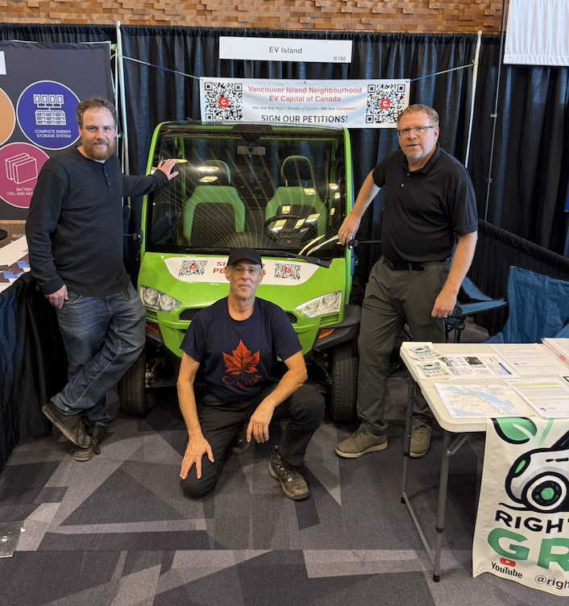

After a year of research and development, EV Island has launched evisland.ca — a website dedicated to a low-cost pilot plan for transforming the E&N Railway Corridor into a clean energy, low-speed electric roadway. Passenger train service ended in 2011, and the line has been sitting idle ever since.

Our focus on the Island Corridor was shaped by conversations at the Everything Electric Expo in Vancouver last September. The message we heard was consistent: "That rail project is going nowhere."
The E&N corridor is a 289 km publicly funded asset running through the heart of Vancouver Island, held by the Island Corridor Foundation — a non-profit sustained by government funding. We believe it deserves a fresh vision — one with a clear intent to solve the legal, financial, and environmental challenges that have kept it dormant.

Visit evisland.ca to see what's possible.
Dave Haberman